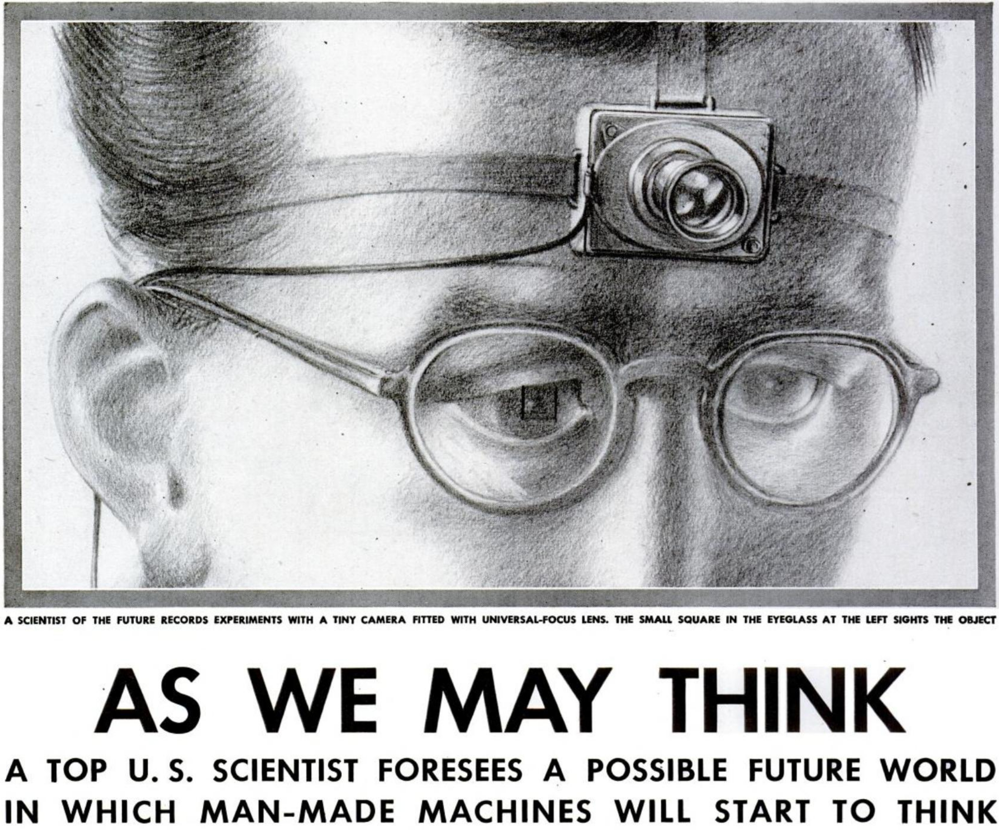
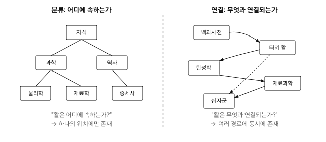
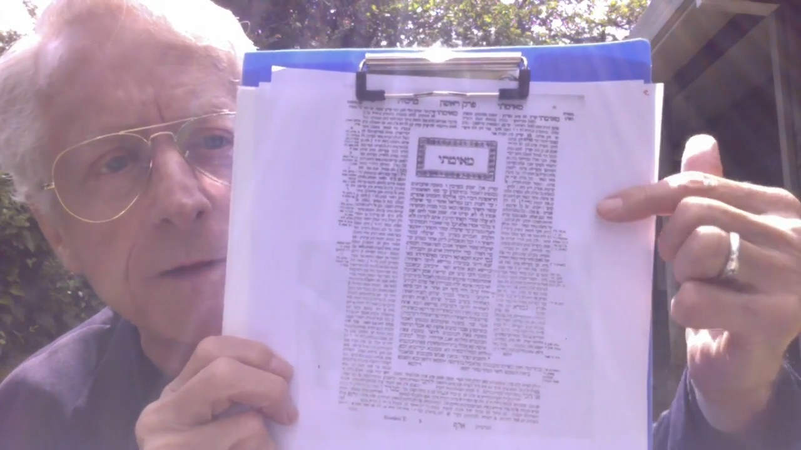
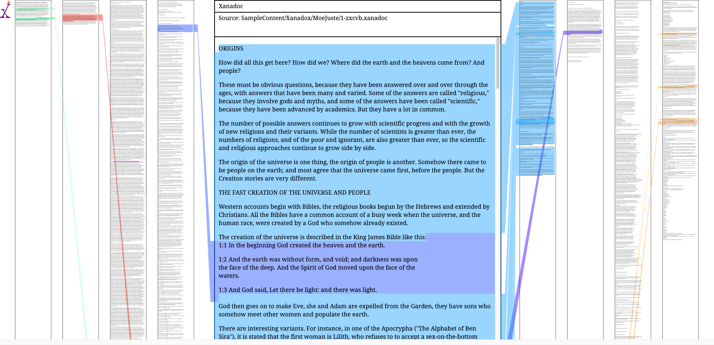

1945년 7월, 《The Atlantic》에 한 편의 글이 실렸다. 저자는 바네바 부시(Vannevar Bush). 그는 미국 과학연구개발국(OSRD) 국장으로서 맨해튼 프로젝트를 포함한 전시 과학 연구를 총괄했던 인물이다. 전례 없는 규모의 과학 지식이 생산되던 시대였다.
전쟁은 끝나가고 있었다. 부시의 관심은 이제 다른 곳을 향했다. 과학 지식은 폭발적으로 증가하고 있었지만, 정작 필요한 정보를 찾기는 어려웠다. 멘델의 유전 법칙이 35년간 묻혀 있었던 것처럼,1 중요한 발견들이 쏟아지는 출판물 속에서 사라지고 있었다. 그는 글의 제목을 이렇게 붙였다. “As We May Think”, 우리가 생각하는 방식에 대하여.2
부시가 문제 삼은 것은 정보의 양만이 아니었다. 축적된 정보를 어떻게 다시 만나고, 서로 다른 자료 사이의 관계를 어떻게 따라갈 것인가 하는 문제였다.

오늘날 이 질문은 기록을 이해하는 방식과도 연결된다. 하나의 기록에는 제목과 작성일, 생산자와 내용이 적혀 있다. 그러나 기록의 의미가 그 안에 적힌 정보만으로 완성되는 것은 아니다. 그 기록이 어떤 활동의 과정에서 생산되었는지, 어떤 기록을 전제로 작성되었는지, 이후 어떤 결정과 행위로 이어졌는지를 함께 보아야 할 때가 많다.
가령 사업계획의 승인 결과가 담긴 공문서를 생각해 보자. 공문에는 승인 사실과 일시, 승인권자가 적혀 있다. 하지만 무엇을 승인했는지, 누가 승인을 요청했는지, 어떤 검토와 논의가 선행되었는지, 승인 뒤에 어떤 일이 일어났는지를 이해하려면 다른 기록을 찾아야 한다. 사업계획서, 검토 의견서, 회의록, 변경 요청서, 예산 문서가 서로 관계를 맺을 때 비로소 하나의 업무 과정이 보인다.
기록은 독립된 문서이면서 동시에 다른 기록과 관계를 맺는 존재다. 그렇다면 우리는 기록과 기록 사이에 무엇이 있는지, 그 관계를 어떻게 남기고 보여 줄 수 있는지 충분히 생각해 왔을까.
메멕스 : 분류가 아닌 연결의 제안
부시가 제안한 해결책은 메멕스(Memex)였다. 메멕스는 책상 크기의 장치로, 마이크로필름에 저장된 책, 기록, 메모를 빠르게 불러올 수 있었다. 그러나 메멕스의 핵심은 저장이 아니라, '연결'이었다.
당시의 분류 체계는 정보를 계층적으로 정리했다. 하나의 정보는 상위 범주에서 하위 범주로 갈라지는 가지(branch) 가운데 한 자리에 놓이고, 찾는 사람은 그 가지를 따라 위에서 아래로 내려가야 한다. 오늘날의 폴더 구조를 떠올리면 쉽다. 폴더 안에 하위 폴더가 있고, 그 안에 다시 파일이 놓인다.
부시는 이 방식을 두고 이렇게 썼다. “The human mind does not work that way. It operates by association.”(인간의 사고는 그렇게 작동하지 않는다. 연상에 의해 작동한다.)2 인간의 생각은 하나의 분류 가지를 위아래로만 오르내리지 않는다. 어떤 생각은 다른 분야의 개념으로, 오래된 기억으로, 예상하지 못한 경험으로 옆으로 뻗어 간다. 하나의 생각에서 다른 생각으로, 마치 거미줄처럼 이동한다. 부시는 정보의 분류 방식과 사고 방식 사이의 이 간극을 지적한 것이다.
메멕스에서 사용자는 두 개의 문서를 나란히 펼쳐 놓고 읽다가, 그 사이의 관계를 발견하면 연결을 만든다. 이 연결은 문서 안에 각주처럼 붙지 않는다. 대신 메멕스 내부에 하나의 경로(trail)로 저장된다. A에서 B로, B에서 C로 이어지는 이 경로는 단순한 참고 목록이 아니라 사용자가 따라온 사고의 흐름이다.
며칠 뒤, 메멕스 앞에 앉은 사용자는 다시 이전에 기록했던 그 경로를 다시 불러올 수 있다. 버튼을 누르면 문서는 이전에 설정된 순서대로 나타난다. 사용자는 그 문서들을 다시 읽으며, 과거의 자신이 만들어 둔 연결의 순서 속에서 그때의 사고를 다시 따라간다. 부시는 이 경로를 다른 사람에게 전달할 수도 있다고 상상했다. 경로 자체가 하나의 지식 단위가 되는 것이다.
하나의 위치, 여러 개의 경로
부시가 보기에 분류 체계의 한계는 하나의 정보가 단 하나의 위치에만 놓인다는 데 있었다. 그는 이렇게 썼다. “It can be in only one place, unless duplicates are used.”(복제본을 쓰지 않는 한, 정보는 한 곳에만 있을 수 있다.)2
부시는 이 문제를 설명하며 터키 활(Turkish bow)을 연구하는 사람의 사례를 들었다. 일반적으로 터키 활은 ‘무기’로 분류된 서가에서 찾아야 한다. 그러나 활의 탄성을 이해하려면 물리학 서가로, 십자군 전쟁과의 관계를 알려면 역사학 서가로 이동해야 한다. 문제는 활이 어디에 속하는가가 아니었다. 터키 활에 관한 문서는 반드시 어딘가 한 자리에만 놓여야 한다는 것이었다.

메멕스가 넘어선 것은 바로 이 한계였다. 하나의 자료는 여전히 하나의 위치에 있지만, 사용자는 그 자료와 다른 자료 사이에 관계를 만들고, 그 연결을 하나의 경로로 남길 수 있다. 부시가 든 터키 활의 예에서, 활은 탄성학과 재료과학, 십자군 전쟁 등 여러 경로 위에 동시에 놓일 수 있다. 분류가 “어디에 속하는가”를 묻는다면, 연결은 “무엇과 관계하는가”를 묻는다. 연결은 분류를 대체하지 않지만, 분류가 담당하지 못했던 차원을 추가할 수 있다.
이 차이는 기록을 이해할 때도 중요하다. 퐁, 시리즈, 파일로 이어지는 계층은 기록이 어디에 속하는지 보여 준다. 이는 기록의 생산과 축적 맥락을 이해하는 데 필수적인 정보다. 그러나 하나의 기록이 어떤 활동의 결과인지, 여러 행위자 가운데 누가 관여했는지, 다른 기관의 어떤 기록과 같은 사건을 설명하는지는 계층의 위치만으로 충분히 드러나지 않을 수 있다.
기록은 하나의 위치를 가져야 한다. 그래야 그 기록이 어디에서 왔는지 잃지 않을 수 있다. 하지만 기록은 하나의 위치만으로 읽혀서는 안 된다. 그래야 그 기록이 무엇과 함께 움직였는지 볼 수 있다.
웹 : 연결이 정보 환경이 되었을 때
이제 1960년대 미국으로 가 보자. 당시 컴퓨터는 오늘날처럼 개인의 책상이나 손바닥 위에 놓인 물건이 아니었다. 대학과 기업, 군사 연구소의 전산실을 차지한 대형 기계였고, 사용자는 대개 천공카드에 명령을 입력한 뒤 결과를 기다려야 했다. 컴퓨터는 복잡한 계산과 대량의 행정 처리를 빠르게 수행하는 도구였다.
하버드 대학원에서 사회학을 공부하던 작가이자 컴퓨터 사상가 테드 넬슨(Ted Nelson)은 이 기계에서 다른 가능성을 보았다. 그에게 컴퓨터는 숫자와 표를 처리하는 장치에 그치지 않았다. 문서를 나란히 펼쳐 두고, 한 문장의 인용이 다른 문장으로 이어지며, 읽는 사람이 자신의 경로를 만들 수 있게 하는 매체가 될 수 있었다.
1965년, 넬슨은 새로운 단어를 만들었다. 하이퍼텍스트(hypertext). “hyper-”는 그리스어로 “넘어서(beyond)”를 뜻한다. 넬슨이 넘어서려 한 것은 선형적 텍스트였다. 책은 첫 페이지에서 마지막 페이지로 흐른다. 그러나 사고는 그렇게 흐르지 않는다. 넬슨은 하이퍼텍스트를 이렇게 정의했다. “By ‘hypertext’ I mean non-sequential writing — text that branches and allows choices to the reader, best read at an interactive screen.”(내가 말하는 하이퍼텍스트란 비순차적 글쓰기, 곧 갈래를 만들고 독자에게 선택지를 주며 상호작용 화면에서 읽기에 가장 알맞은 텍스트다.)6
이런 맥락에서 넬슨은 프로젝트 자나두(Project Xanadu)를 제안했다. ‘자나두’는 영국 낭만주의 시인 새뮤얼 테일러 콜리지의 시 「쿠블라 칸」에 나오는 궁전의 이름이다. 메멕스가 개인의 책상 위에 놓인 가상의 기계였다면, 자나두는 전 세계 문서를 연결하는 전자 문학 체계의 구상이었다. 프로젝트 자나두는 이 구상을 구현하려 한 장기 연구·개발 프로젝트였다. 자나두는 단일한 기계나 제품의 이름이 아니라, 하나의 체계와 그것을 실현하려는 실험을 함께 가리킨다. 3
자나두는 세계의 문헌적 지식을 점진적으로 포함하며 무한히 성장하는 시스템을 목표로 했다.4 넬슨이 구상한 것은 단순한 링크가 아니었다. 한 문서가 다른 문서의 일부를 인용하면, 인용문은 원문과의 연결을 잃지 않아야 했다. 원문이 수정되어도 어떤 문서가 어떤 부분을 가져와 썼는지 그 관계를 따라갈 수 있어야 했다. 문서 사이의 연결이 시각적으로 드러나고, 인용의 출처가 추적되며, 링크가 끊어지지 않는 시스템이었다.


메멕스와 자나두는 연결된 지식의 세계를 서로 다르게 상상했다. 웹은 그 상상을 그대로 실현하지는 않았다. 1989년 팀 버너스리(Tim Berners-Lee)가 제안한 월드 와이드 웹은 연결을 누구나 사용하는 정보 환경으로 바꾸었다.7
자나두가 문서 사이의 모든 관계를 정교하게 보존하려 한 설계였다면, 웹은 훨씬 적은 공통 규칙으로 연결을 가능하게 했다. URL(Uniform Resource Locator)은 자료의 위치를 식별하고, 하이퍼링크는 다른 자료로 이동하게 하며, 웹 브라우저(Web Browser)는 서로 다른 기관과 개인이 만든 문서를 같은 화면에서 열게 했다. 누구나 문서를 만들고 다른 문서에 연결할 수 있는 이 개방성은 웹을 빠르게 확산시켰다.
이 점에서 웹은 메멕스나 자나두와 다르다. 부시의 메멕스는 개인의 책상 위에 놓인 장치였고, 자나두는 거대한 연결 문서 세계의 설계도였다. 웹은 연결을 특정 연구자나 설계자의 이상이 아니라, 수많은 사람이 매일 사용하는 정보 환경으로 만들었다.
웹의 링크는 넬슨이 바랐던 모든 것을 구현하지는 못했다. 연결은 대체로 한 방향으로 작동하고, 두 자료가 왜 연결되었는지 자동으로 설명하지 않으며, 주소가 바뀌면 끊어질 수 있다. 넬슨은 심지어 웹을 두고 “우리가 막으려 했던 것”이라고 쓰기도 했다.3 그럼에도 하이퍼링크는 무언가를 바꾸었다. 이제 클릭 한 번으로 우리는 저자가 정해 놓은 순서를 벗어날 수 있다. 부시의 메멕스가 연상적 색인(associative indexing)을 제안하고, 넬슨의 하이퍼텍스트가 그것에 이름을 붙였다면, 웹은 그것을 비록 불완전하게나마 모두의 손에 쥐어 주었다.
웹은 기록을 관계적으로 만들었다기보다, 기록과 정보를 관계 속에서 발견하는 일을 당연하게 만들었다.
하이퍼텍스트라는 '새로운 분류'
분류는 사물을 나누고 이름 붙이는 일이다. 그러나 분류는 세계를 이해하는 방식이기도 하다. 무엇을 무엇과 함께 볼 것인지, 어떤 대상들이 서로 비교될 수 있는지를 결정하기 때문이다. 기록을 특정 퐁, 시리즈, 파일에 배치하는 일은 단지 기록의 위치를 정하는 것만이 아니다. 그 기록을 어떤 생산자와 어떤 업무 과정 속에서 읽을 것인지 결정하는 일이기도 하다.
웹은 이 질문에 다른 형식을 제시했다. 웹에서 정보는 하나의 분류표를 넘어 다른 정보와의 연결을 통해 나타날 수 있다. 하이퍼텍스트는 기록을 원래의 자리에서 옮기지 않으면서도, 무엇을 무엇과 함께 읽을 것인가를 다시 정한다. 이 점에서 하이퍼텍스트는 새로운 분류처럼 작동한다.
연결이 의미가 되는 순간
웹과 기록학은 서로 다른 언어로 관계의 중요성을 말해 왔다. 웹에서 링크는 문서와 정보 사이를 오가는 경로를 만들고, 기록학에서 출처주의와 원질서, 기록 간 유대는 기록의 의미가 생산자와 활동, 다른 기록과의 관계 속에서 드러난다는 사실을 보여 준다. 웹의 연결이 일상적인 정보 경험이 된 오늘, 기록학이 다뤄 온 관계의 개념은 새로운 방식으로 읽힌다.
기록을 퐁에서 시리즈, 파일, 아이템으로 내려가며 설명하는 다계층 기술은 기록의 생산과 축적 맥락을 보여 주는 강력한 방식이다. 이 계층은 기록이 누구의 활동에서, 어떤 흐름 속에서 생산되고 관리되었는지를 드러내며, 기록의 소속과 출처를 잃지 않게 하는 기반이 된다. 그러나 기록의 맥락이 언제나 하나의 계층 안에서만 완성되는 것은 아니다. 하나의 문서는 특정 활동의 결과이면서 여러 행위자와 사건, 다른 문서의 관계 속에 놓일 수 있고, 서로 다른 기록집합에 흩어진 문서들이 하나의 활동이나 사건을 함께 보여 주기도 한다.
ICA가 제안한 Records in Contexts, 즉 RiC는 이러한 관계를 더 명시적으로 기술하려는 개념모형이다.5 기록, 행위자, 활동, 사건, 장소를 각각 기술하고 그 사이의 관계를 함께 남김으로써, 기록의 생산과 축적을 보여 주는 계층에 다른 맥락의 경로를 더한다.
연결 자체도 하나의 기록기술이다. 링크는 두 문서를 오가는 통로에 그치지 않고, 두 기록이 어떤 관계에 있는지에 관해 제시하는 설명이다. 업무 과정에서 실제로 형성된 승인·참조·공동 생산의 관계와, 아키비스트나 연구자가 공통의 사건·인물·주제를 근거로 나중에 설정한 관계는 같은 방식으로 다룰 수 없다. 기록기술은 각 연결의 유형과 설정 주체, 그 근거를 함께 남겨야 한다. 그래야 이용자는 링크를 따라가는 동시에 그 연결이 무엇을 뜻하는지 판단할 수 있다. 하이퍼텍스트가 새롭게 분류하는 것은 기록의 위치가 아니라, 기록과 기록을 함께 읽게 하는 관계다.
주석
- 그레고어 멘델(Gregor Mendel)은 1866년 브륀 자연사학회 학술지에 완두콩 교배 실험 결과를 발표했다. 그러나 이 논문은 34년간 거의 주목받지 못했다. 1900년, 휘호 드 브리스(Hugo de Vries), 카를 코렌스(Carl Correns), 에리히 폰 체르마크(Erich von Tschermak)가 각자의 연구를 진행하다 멘델의 논문을 독립적으로 재발견했다. 부시는 이 사례를 정보 검색 시스템 실패의 대표적 예로 인용했다. 참고: van Dijk, P.J., Jessop, A.P. & Ellis, T.H.N. (2022). How did Mendel arrive at his discoveries? Nature Genetics, 54, 926–933. https://doi.org/10.1038/s41588-022-01109-9 ↩
- Bush, V. (1945). As We May Think. The Atlantic. https://www.theatlantic.com/magazine/archive/1945/07/as-we-may-think/303881/ ↩ ↩ ↩
- Nelson, T. H. The Xanadu Parallel Universe. Project Xanadu. https://xanadu.com/xUniverse-D6 ↩ ↩
- Nelson, T. H. (1965). Complex Information Processing: A File Structure for the Complex, the Changing and the Indeterminate. Proceedings of the 1965 20th National Conference, ACM. https://dl.acm.org/doi/10.1145/800197.806036 ↩
- International Council on Archives, Experts Group on Archival Description (ICA-EGAD). (2026). Records in Contexts Conceptual Model (RiC-CM), Version 1.0.1. https://github.com/ICA-EGAD/RiC-CM/tree/master/current-version ↩
- Nelson, T. H. (1993). Literary Machines 93.1. Mindful Press. ↩
- 〈웹 이후의 기록학〉 #1, 「웹은 처음부터 아카이브였다」. ↩
개정 노트
2026.11. 3월 초고의 메멕스·자나두·하이퍼링크 논의를 유지하면서, 웹을 연결이 일상적인 정보 환경이 된 조건으로 다시 배치했다. 또한 하이퍼텍스트를 기존 분류의 대체가 아니라 기록의 관계를 따라 접근과 이해의 경로를 새롭게 조직하는 방식으로 보완하고, RiC의 다차원적 기록기술 논의를 추가했다.
태그
#웹 #하이퍼텍스트 #메멕스 #기록학 #RiC #연결연재 정보
이 글은 〈웹 이후의 기록학〉 6부작 연재 시리즈입니다.
- #1: 웹은 처음부터 아카이브였다
- #2: 하이퍼텍스트라는 새로운 분류
- #3: 검색되지 않는 기록은 기록인가
- #4–#6: 계속